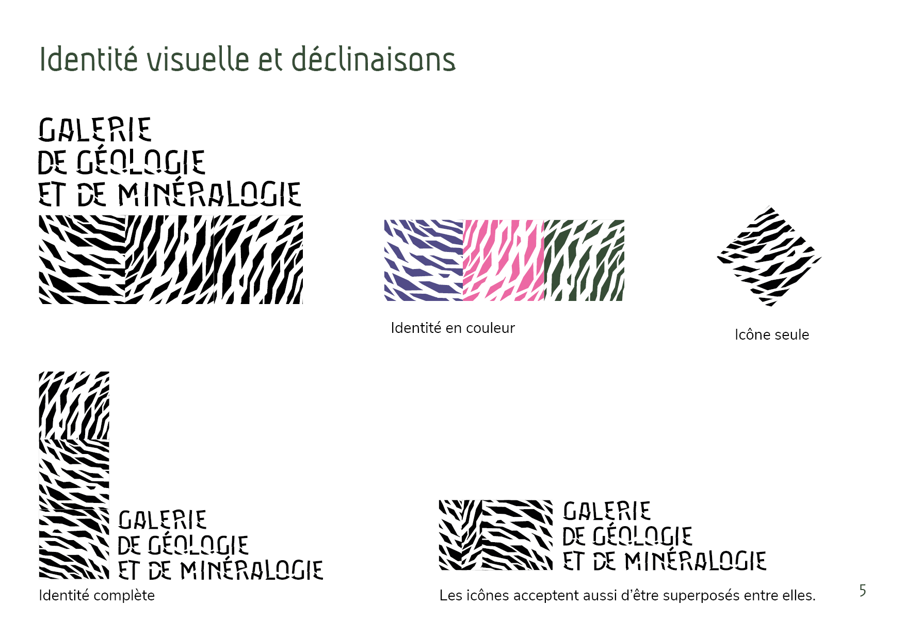
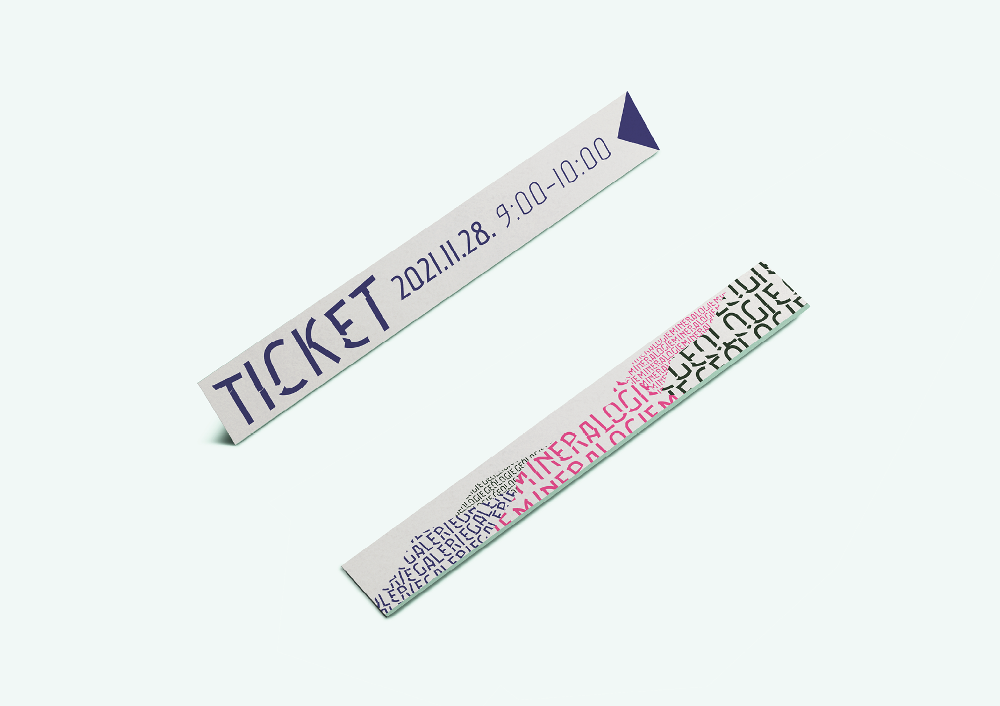
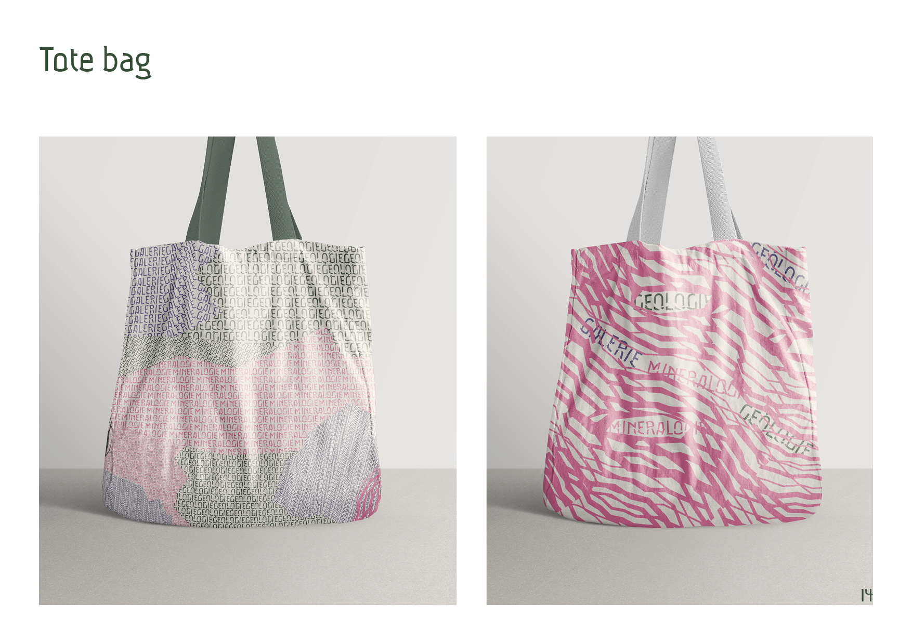

Conçu pour : Projet scolaire fictif
J’ai choisi de réaliser un projet fictif d’identité visuelle pour la galerie de géologie et de minéraologie du Jardin des Plantes de Paris. Il nous était demandé de réaliser le logo, la typographie, des éléments de signalétique, ainsi que divers objets où l’identité visuelle serait déclinée. En plus de ces livrables, il nous était également demandé de réaliser une campagne publicitaire éphémère afin de valoriser le lieu choisi sur le thème du « sauvage ».
Comment montrer la merveille et la riche histoire des disciplines scientifiques telles que la géologie et la minéralogie tout en conservant une identité contemporaine et singulière?
Outils : Procreate, Adobe Illustrator, Adobe Indesign, Adobe Photoshop
À propos
Projets
5 Colonnes 8 cases
Identité visuelle de la GG&M
Lisatoys
Who is the virus?
Costumes
Dernière mode
Identité visuelle de la galerie de géologie et de minéralogie
Petit aperçu sur la charte graphique




×>
×